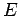
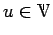
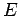
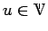

Sei E eine beliebige nichtleere Menge eines geordneten Vektorraumes  . Ein Element für das gilt, heißt obere Schranke der Menge . Eine untere Schranke für E ist ein Element  mit
. Ein Element für das gilt, heißt obere Schranke der Menge . Eine untere Schranke für E ist ein Element  mit
| (12.32) |
und nennt sie Ordnungsintervall oder (0)-Intervall. Offenbar sind x bzw. y untere bzw. obere Schranke der Menge [x,y], wobei diese der Menge sogar angehören. Eine Menge  heißt nun ordnungs- oder einfach (0)-beschränkt, wenn E Teilmenge eines Ordnungsintervalls ist, d.h., wenn zwei Elemente existieren, so daß oder, was äquivalent dazu ist, gilt. Eine von oben beschränkte bzw. von unten beschränkte Menge ist eine Menge, für die eine obere bzw. eine untere Schranke in
heißt nun ordnungs- oder einfach (0)-beschränkt, wenn E Teilmenge eines Ordnungsintervalls ist, d.h., wenn zwei Elemente existieren, so daß oder, was äquivalent dazu ist, gilt. Eine von oben beschränkte bzw. von unten beschränkte Menge ist eine Menge, für die eine obere bzw. eine untere Schranke in  existiert.
existiert.